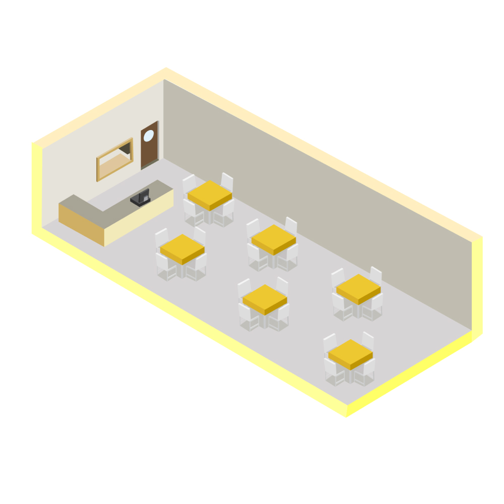
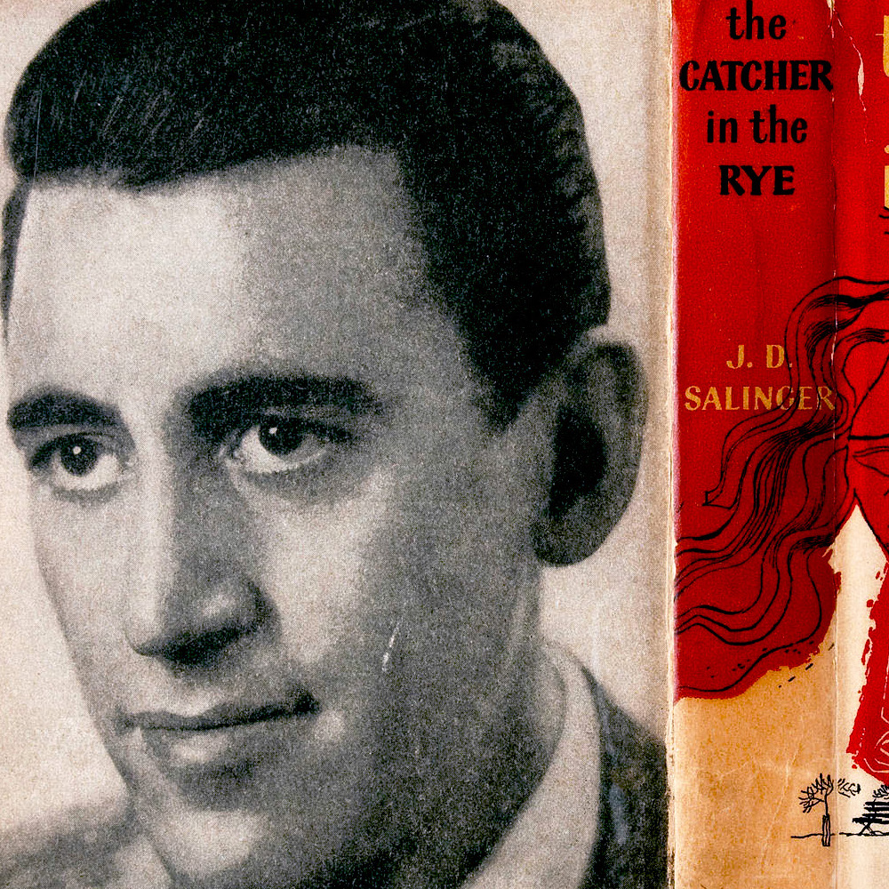
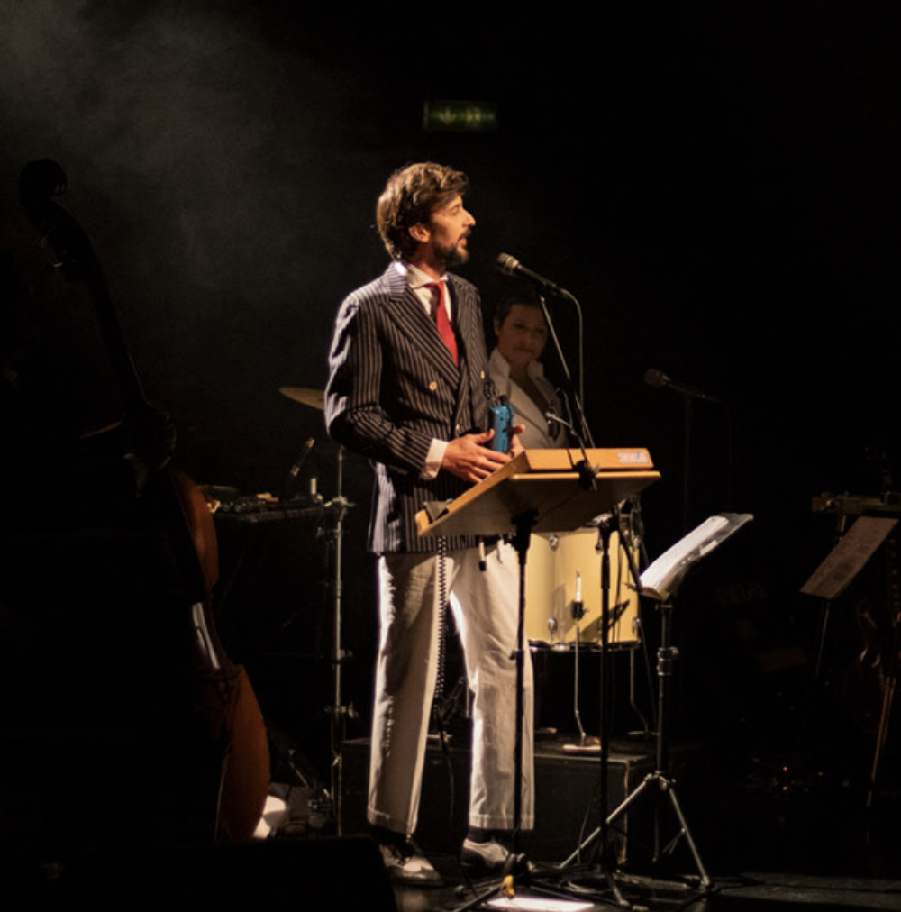
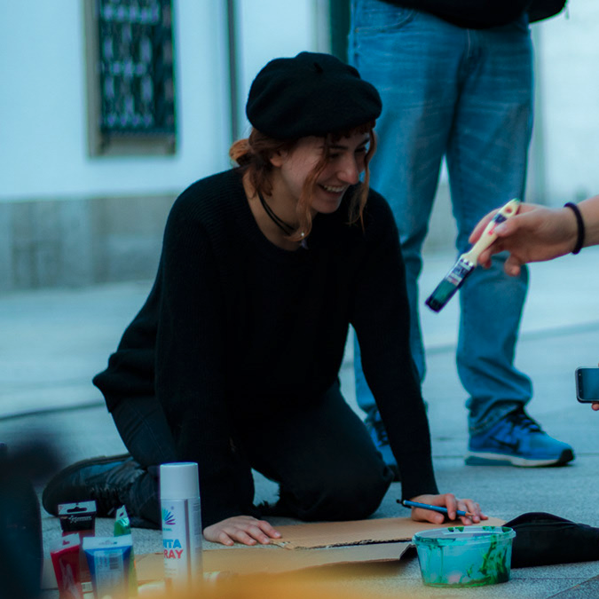
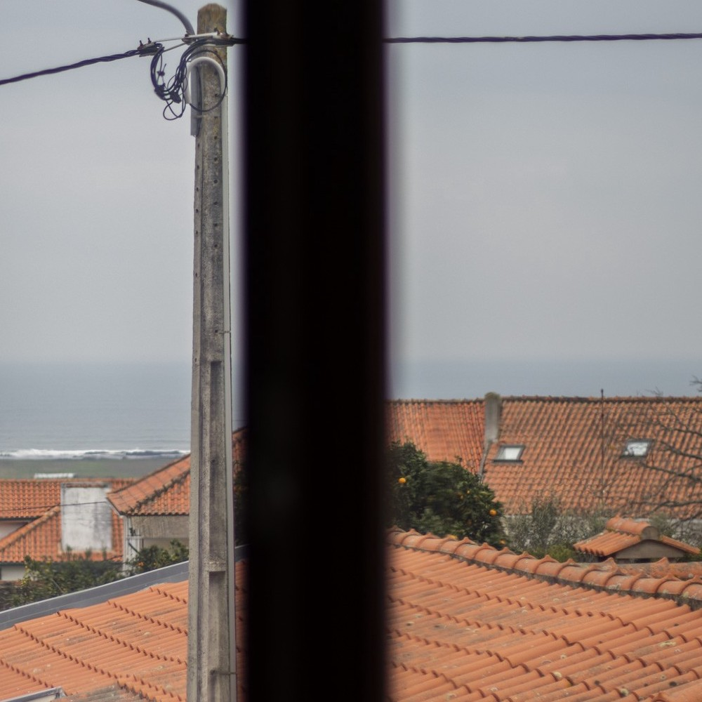

Menu
Cátia Barros
Início
Sobre mim
CV
Portfólio
Contactos
Segue-me
portfólio
Inicio
/ Portfolio
Todos
Jornalismo
Fotografia
Design
Visualização de dados
Desenvolvimento web
Vídeo
Comunicação
Samuel Úria: “Sinto-me mais um artífice do que um artista”
Jornalismo
Saiba que escolas têm registo de casos de Covid-19
Jornalismo / Visualização de dados
Economia (não) mexe com ruas vazias
Jornalismo / Visualização de dados/ Desenvolvimento web / Video

Como faria a gestão de restaurante em pandemia?
Jornalismo / Visualização de dados/ Desenvolvimento web
Das 25 mortes às visitas “por entre os vidros”. Como o lar da Santa Casa de Aveiro viveu o surto de Covid-19
Jornalismo / Vídeo
HoloViz - Futuro de visualização de dados de Saúde
Design / Visualização de dados
Brexit. Um processo sem fim
Jornalismo

#Perfil | J. D. Salinger: a reclusão de crimes não cometidos
Jornalismo
“Desmotivação” e “pressão social”: o que leva os estudantes a desistir do Ensino Superior
Jornalismo / Visualização de Dados
O que significa um milhão de mortes? “A Covid-19 segue o padrão das maiores epidemias da história”
Jornalismo / Visualização de Dados
Sílvia Lima: "Não é fácil viajar nas memórias"
Jornalismo / Vídeo

Braga deixou o pimba entrar
Jornalismo / Fotografia

Vígilia pelo clima
Fotografia
O Galo cantou por todas as letras do abecedário
Jornalismo / Fotografia

Situação sem-abrigo. Esquecer uma vida que ficou lá fora
Jornalismo / Visualização de Dados/ Video